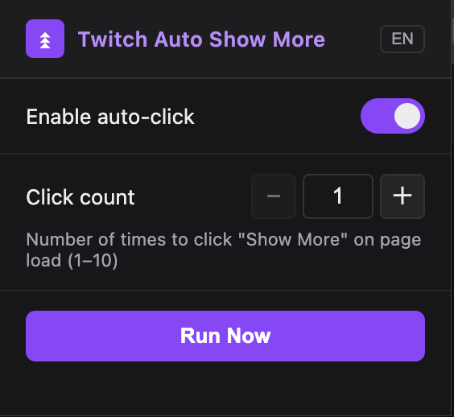
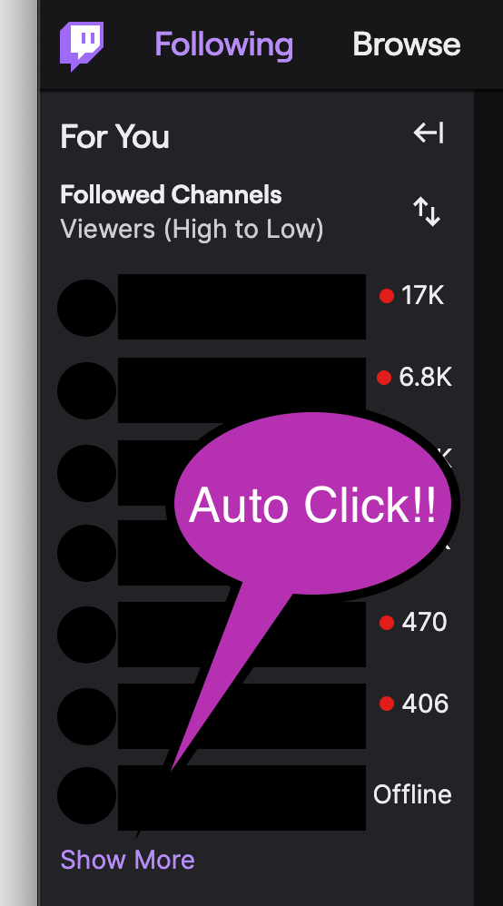

Automatically expand the "Show More" button on Twitch sidebar and enjoy a seamless browsing experience.
Enhance your Twitch experience with these powerful features
Automatically clicks "Show More" button when page loads, saving you time and effort.
Built with vanilla JavaScript. No bloat, no dependencies, just pure performance.
No data collection, no tracking. Your privacy is our top priority.
Easy toggle on/off functionality. Control when the extension should run.
Get started in just 3 simple steps
Visit the GitHub repository and download the latest release.
Navigate to chrome://extensions/ in your Chrome browser and enable "Developer mode".
Click "Load unpacked" and select the downloaded extension folder. That's it!
See the extension in action


Frequently asked questions
No, this extension does not collect, store, or transmit any personal data. All data is stored locally on your device using Chrome's storage API.
Yes! The extension is open-source, so you can review the code anytime. It only operates on Twitch pages and doesn't access any other websites.
Click the extension icon in your browser toolbar and toggle the switch. You can also disable it from chrome://extensions/ page.
Currently, this extension is designed specifically for Twitch. Support for other platforms may be added in the future based on user demand.